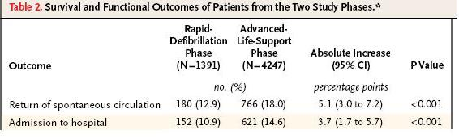

Measure of Association - Risk Difference
Lead Author(s): Jeff Martin, MD
Why Use Risk Difference?
Risk difference gives an absolute measure of the association between exposure and disease occurrence:
- Public health implication is clearer with absolute measure: how much disease might eliminating the exposure prevent?
Difference or absolute measures are important because they indicate how much disease eliminating the exposure (or providing the treatment) would prevent.
Definition of Risk
In a cohort study:
Risk is based on proportion of persons with disease = cumulative incidence
The concept of risk reflects the proportion of persons experiencing the event or outcome or disease.
Most Useful Application of Absolute Difference
Reciprocal of Absolute Difference OR ( 1/difference)
- Number needed to treat to prevent one case of disease
- Number needed to treat to harm one person
- Number needed to protect from exposure to prevent one case of disease
This is one of the most useful applications of the absolute difference, the number needed to treat to prevent one case of disease. From this relationship one can see how the absolute difference can be used in cost effectiveness analysis. 
TB treated with rifampin example: (above)
- 1/0.026 = 38.5
- Means that you have to treat 38.5 persons for 6 mos vs. 3 mos to prevent one case of TB recurrence
In this example, we might ask what are the cost implications of treating 38.5 persons an extra 3 months to prevent one case of TB?
- The answer will depend on the relative cost of treating the 38.5 persons with rifampin versus the cost of managing and treating one case of TB.
- Those costs can be compiled and compared.
Of course, the two costs may not be the only the consideration.
In this example, TB is a contagious disease and allowing one case of recurrence by under-treating could lead to additional infections and other cases of TB.
Study Reporting Risk Difference
In the table below Stiell provides the following information:

Risk difference for return to spontaneous circulation (labeled Absolute Increase) = 0.051;
- Therefore, number needed to treat = 1/0.051 = 20
Risk difference for admission to the hospital (labeled Absolute Increase) = 0.037;
- Therefore, number needed to treat = 1/0.037 = 27
Here is an example of a in the New England Journal of Medicine that reported risk differences rather than risk ratios.
This shows two of their findings, the absolute increase in the percent of patients suffering heart failure having a return to spontaneous circulation and the absolute increase in the percent of patients having admission to the hospital.
Because this was an attempt to evaluate a public health intervention of making advanced life support available to the emergency responders for all such cases, the absolute percent of cases, rather than a ratio measure, was of primary interest. (If a risk ratio had been supplied for return to spontaneous circulation, it would have been around 1.5.)
The two phases are before and after advanced life support became the standard for emergency responses in this location. The absolute difference is low, but the percentages were low on both phases.
- Taking 1 over this difference gives a number needed to treat of 20.
- So every 20 patients receiving advanced life support results in one additional person returning to spontaneous circulation.
References
Stiell, I. G., Wells, G. A., Field, B., Spaite, D. W., Nesbitt, L. P., De Maio, V. J., et al. (2004). Advanced cardiac life support in out-of-hospital cardiac arrest. N Engl J Med, 351 (7), 647-656.